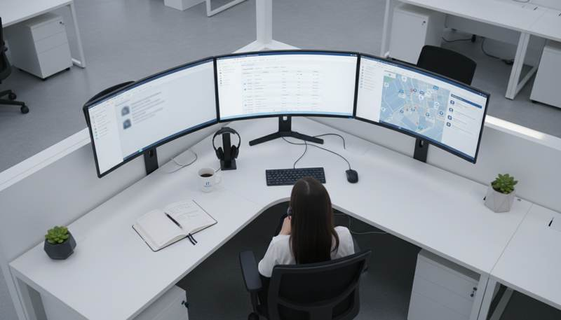

Introduction to Same Day Computer Repair
In today’s fast-paced world, experiencing a computer breakdown can be a major setback. Whether it's a hardware failure or a software glitch, waiting days for repairs is not an option. This is where same day computer repair services come into play, offering quick solutions to keep you up and running. If you're in Edmonton, you'll want to know about WMTechsupport, a leader in providing top-notch same day repair services.

Why Choose Same Day Services?
Same day computer repair services are essential for minimizing downtime, ensuring that both personal and professional tasks remain on track. With technology being an integral part of our daily lives, waiting for repairs can result in lost productivity and missed opportunities. WMTechsupport understands this urgency and prioritizes immediate attention to your tech issues.
Benefits of Immediate Repairs
Choosing same day services offers several advantages:
- Quick Turnaround: Get your computer issues resolved in hours rather than days.
- Cost-Effective: Avoid further damage and additional costs by addressing issues promptly.
- Convenience: Restore your workflow without having to reschedule your day.
WMTechsupport: A Cut Above the Rest
What sets WMTechsupport apart in Edmonton’s crowded repair market? Their commitment to excellence and customer satisfaction. They combine technical expertise with exceptional customer service, ensuring that every client receives personalized attention. Their team of skilled technicians is equipped to handle a wide range of issues, from hardware malfunctions to software errors.
Expert Technicians at Your Service
WMTechsupport employs certified professionals who are well-versed in the latest technology trends and repair techniques. Their extensive experience means they can quickly diagnose and fix issues, saving you time and frustration. The team’s dedication to continuous learning ensures they are prepared for any challenge.

Comprehensive Services Offered
WMTechsupport offers a comprehensive range of services to meet all your computer repair needs. Here’s a look at some of their key offerings:
- Hardware Repairs: From screen replacements to hard drive recovery.
- Software Troubleshooting: Fixing operating system errors and removing viruses.
- Data Recovery: Retrieving lost or corrupted data safely and securely.
Customer-Centric Approach
Customer satisfaction is at the heart of WMTechsupport’s mission. They offer transparent pricing, free diagnostics, and a no-fix, no-fee guarantee. This approach not only builds trust but also ensures peace of mind for their clients. Their friendly and knowledgeable staff are always ready to answer questions and provide guidance.
In summary, if you're facing computer issues in Edmonton, WMTechsupport is your go-to solution for fast, reliable, and professional repair services. Their same day computer repair service ensures you won't have to put your life on hold due to technical difficulties.